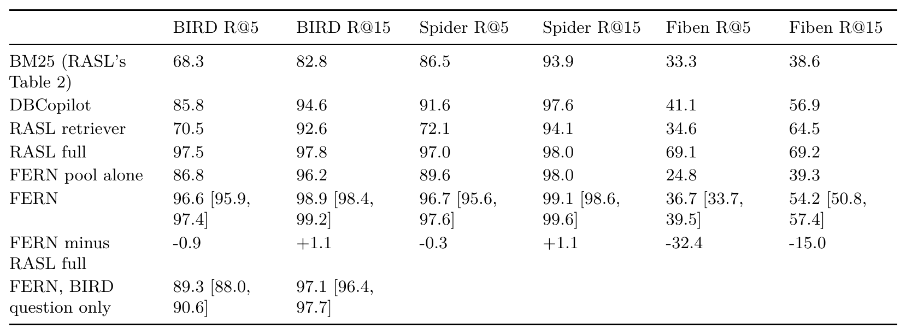
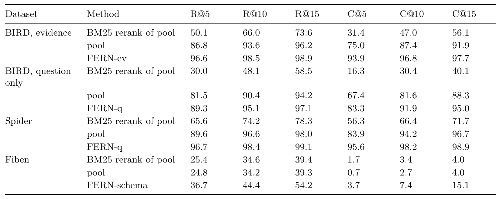

目录 · 8 节
1漏一张表，召回 67%，查询照样错2四步流程：冻结检索、融合取候选、算特征、排序3候选池用排名而不是分数来合并4排序器靠的是检索分之外的线索5Spider 上追到 RASL 1 个点以内6排序器把前 5 张的凑齐率从 83.9% 提到 95.6%7不带证据的 BIRD、Fiben 和 BEAVER 上，FERN 明显落后8把排序器当作第一版找表方案这篇论文说明：在表名读得懂的公开基准上，给 Text-to-SQL 找表不一定要调用大模型；几个现成检索器加一个梯度提升排序器，5 张表预算下就能追到调用 Claude 选表方案 1 个点以内。但在不带逐题证据提示的 BIRD（一个公开的 Text-to-SQL 基准）上、在表名连写的金融库上，它明显落后于调用 Claude 的方案；在企业数仓基准上，它凑齐全部所需表的比例也低于两个在该数仓上训过的检索器。
论文研究的设定是把多个库汇成一个目录、不告诉模型目标库在哪，几百张表摆在一起。论文用的 BIRD（一个公开的 Text-to-SQL 基准）dev 目录就是 80 个库、597 张表。生成 SQL 之前，系统得先从这几百张表里挑出这道题要用的那几张，再把它们的 schema 交给生成器。
难点在于这一步两头都不能错。漏掉一张表，SQL 一定写错；多给几张表，又会占掉生成器的上下文。用一个贯穿全文的例子（示意）：问题是「去年在上海下单金额最高的会员叫什么」，需要 member、orders、city 三张表。目录里可能有五个电商库都带 orders 表，而「上海」只出现在 city 表的单元格里，表名和列名里都没有。
现有的找表方法，例如有纯检索方法，也有用 LLM 抽词再选表的方法。纯检索时，BM25 看到「下单」，会把五个库的 orders 表都排到前面，city 表因为名字和问题没有一个词重合，掉到很后面。后一类的代表是 RASL（先让 Claude 3.5 Haiku 从问题里抽关键词检索，再让 Claude 3.5 Sonnet 读候选 schema、挑出它认为需要的表）。RASL 的召回很高，但每道题要调用两次托管模型；在企业环境里，把 schema 和问题发到外部服务可能不被接受。
FERN（作者提出的找表方法，全称 Feature-Engineered Ranking with No generative LLM）想回答的是：不调用生成式模型，只用本地能跑的组件，能走多远。
漏一张表，召回 67%，查询照样错
先看怎么打分。recall@k 是金标表（标准答案 SQL 用到的表）有多少落进前 k 张，按题平均。上面的例子里，前 5 张找到了 member 和 orders，漏了 city，recall@5 是 2/3≈67%（示意）。这个数看着不算差，可这道题的 SQL 一定写错。
所以论文同时报 complete@k：前 k 张里包含全部金标表的题目占比。上面那道题的 complete@5 记 0。凑齐表是写对 SQL 的必要条件，不是充分条件，但凑不齐一定错。后面的结果要两个指标一起看：一个系统的平均召回可以很高，凑齐率却明显更低。
四步流程：冻结检索、融合取候选、算特征、排序
FERN 不训练检索模型，只在最后一步训一个排序器。整条路径如下：
| 步骤 | 输入 | 做什么 | 产出 | 只在训练时？ |
|---|---|---|---|---|
| 1 冻结检索 | 问题、每张表的全卡片和名字卡片 | BM25 和两个现成 embedding 模型（Qwen3-Embedding-0.6B、BGE-large）给全目录每张表打分 | 每张表的 5 个检索分 | 否 |
| 2 候选池 | BM25、Qwen3、BGE 在全卡片上的排名 | 用 RRF 融合排名，取前 100 | 100 张候选表 | 否 |
| 3 特征 | 问题、目录、单元格值、检索分 | 给每张候选算最多 120 个特征 | 100×120 的特征矩阵 | 否 |
| 4 排序 | 特征矩阵 | 在 BIRD 训练集上训好的 LightGBM 排序器打分并排序 | 最终表列表 | 排序器只训一次 |
检索器看到的每张表有两张卡片。全卡片写表名、库名和全部列名，列的自然语言名和存储名不同时加在括号里；例子里 city 表的全卡片大致是 city (database shop a): city id, city name (城市名), province（示意）。名字卡片只有拆开驼峰和下划线后的表名词加库名，如 city (database shop a)。两种卡片都不放类型、主外键，也不放数据值。
5 个检索分的来源是：BM25 分别打全卡片和名字卡片，Qwen3-Embedding-0.6B 也分别打全卡片和名字卡片，BGE-large 只打全卡片。
候选池用排名而不是分数来合并
下一步只用其中三个分：BM25、Qwen3、BGE 在全卡片上的排名。为什么不直接把这三个检索器的分数加起来？BM25 的分数没有固定上限，归一化 embedding 的点积不超过 1，两者量纲对不上。FERN 用 RRF（reciprocal rank fusion）只看名次：每个检索器给某张表的名次是 rank（从 0 算起），这张表的池分是三个检索器的 1/(60+rank) 之和。
用两张表算一下池分（示意）：orders 表在三个检索器里排第 0、2、1 名，池分约 1/60+1/62+1/61≈0.049。另一张表 BM25 排第 0，两个 embedding 模型都排到第 80 名之后，池分约 0.017+0.007+0.007≈0.031。三个检索器都说靠前的表，胜过只有一个检索器说靠前的表。
池子取前 100 张，在 BIRD dev 上金标表的平均召回已达 99.4。这说明在 BIRD 上，找到候选基本不是问题，难的是排序。
排序器靠的是检索分之外的线索
候选池按池分排，city 表在例子里仍可能排在第 20 名之外。排序器要用检索分之外的东西把它拉上来。120 个特征分成十几族，下面用 city 这张候选表走一遍（示意）：
- 值匹配：问题里的字面值「上海」出现在 city 表的单元格里，这类特征为 1。
- 外键图：city 和池分第一的候选表 orders 隔一跳 member 相连，连接距离为 2；它还是前 5 名里两张表的共同邻居。
- 所在库：city 和排在前面的 orders、member 同属一个库，这个库的最高池分很高。
- 检索一致性：五个检索信号给 city 的名次是否彼此接近，有几个信号把它放进前 15。
排序器是 LightGBM，用 lambdarank 目标训练：同一道题的 100 张候选为一组，学的是谁该排在谁前面。它只在 9,394 道 BIRD 训练题上训一次，超参事先定好、从不调，然后原样搬到其他基准。
为什么不止用检索分？作者做了分组对照。在 BIRD dev（带证据）上，只用检索分的排序器 complete@5 是 86.2，加上其他特征后是 93.9，高 7.7 点。到 15 张表时，两组各自的召回都在 98 以上。这说明额外特征主要在「只能给生成器 5 张表」时起作用。
FERN 有三个变体，区别在输入：FERN-ev 把 BIRD 每题附带的证据提示（一句点名相关列和值的说明）拼到问题后面，用全部 120 个特征；FERN-q 只用问题，116 个；FERN-schema 再去掉单元格值、列类型和行数，102 个，给拿不到这些信息的目录用。
Spider 上追到 RASL 1 个点以内
对比用的是 RASL 论文公布的数字，没有重跑，也拿不到逐题结果，所以下表的差值只是点差，不是显著性检验。最干净的是 Spider（另一个公开 Text-to-SQL 基准）：FERN 从没在 Spider 上训练，也没有任何设计决策参考过 Spider。表中 RASL retriever 是 RASL 不让 LLM 挑表、只按检索排名的结果；DBCopilot 是一个在目标库合成问题上训练的生成式路由模型。
| 方法 | BIRD R@5 | BIRD R@15 | Spider R@5 | Spider R@15 | Fiben R@15 |
|---|---|---|---|---|---|
| DBCopilot | 85.8 | 94.6 | 91.6 | 97.6 | 56.9 |
| RASL retriever | 70.5 | 92.6 | 72.1 | 94.1 | 64.5 |
| RASL full（Claude 选表） | 97.5 | 97.8 | 97.0 | 98.0 | 69.2 |
| FERN 候选池本身 | 86.8 | 96.2 | 89.6 | 98.0 | 39.3 |
| FERN | 96.6 | 98.9 | 96.7 | 99.1 | 54.2 |
| FERN，BIRD 只用问题 | 89.3 | 97.1 |

5 张表时，FERN 在 Spider 上比 RASL 低 0.3 点，在带证据的 BIRD 上低 0.9 点。这说明在表名可读的公开基准上，不调大模型的排序已经能贴近 Claude 挑表的结果；Spider 上用的还是只看问题的 FERN-q。
15 张表时 FERN 两边都高 1.1 点，但这一格要打折扣：RASL 的 15 是上限，LLM 只返回它认为相关的表，FERN 则一定返回满 15 张。所以这里比的是一张满 15 张的列表和一张可能更短的列表。
另一个结果更出人意料：在 Spider 上，FERN 的候选池本身前 15 张就达到 98.0，和 RASL 持平。这说明以前的非 LLM 方法和 RASL 之间的大部分差距，冻结检索器融合一下就补上了，排序器要挣的是小预算下的那部分。
排序器把前 5 张的凑齐率从 83.9% 提到 95.6%

上图把排序器单独拎出来比：同样 100 张候选，分别按池分、按 BM25 分、按 FERN 排。在 Spider 上，complete@5 从候选池的 83.9 提到 95.6；在带证据的 BIRD 上，从 75.0 提到 93.9。
按 BM25 重排同一个池子反而更差，BIRD 上 complete@5 只有 31.4。这说明提升来自排序器学到的组合，不是随便换一种排法就有。排序器的价值不在把召回再推高一点，而在让更多题目的全部所需表挤进前 5。回到例子：候选池已经包含 city，只是排在后面；排序器靠值匹配和外键距离把它拉进前 5，这道题的 complete@5 才从 0 变成 1。
训好的排序器里，增益最大的特征是「池分与第一名的差距」，占总增益的 49.5%。我的理解是，排序器的骨架仍是检索信号，其他特征负责把排在边界附近的表往前或往后挪。
成本方面，带证据的 FERN-ev 在一张 A100 上每题中位 208 ms，其中纯 Python 特征计算占 122.7 ms，不调用任何托管模型。训练三个排序器在 CPU 上约 3.5 分钟。
不带证据的 BIRD、Fiben 和 BEAVER 上，FERN 明显落后
第一个边界是证据提示。BIRD 的证据常常直接点名所需的列。去掉它，FERN-q 在 BIRD 上 R@5 是 89.3，比 RASL 低 8.2 点，要放到 20 张表才超过 RASL 5 张表的数。对没有逐题证据提示的部署，只用问题的这一行更相关。
第二个边界是 Fiben，一个金融库：表名连写不可读（如 ACCOUNTSPAYABLEANDACCRUEDLIABILITIES），没有单元格值，只有一个库，每题近 4 张表，论文无法判断是哪个因素在起作用。放到例子里（示意）：没有单元格值时，「上海」出现在 city 单元格里这条值匹配线索就不存在，FERN-schema 本来也不算这族特征。FERN 的候选池前 100 张召回上限只有 82.8；最终 15 张表召回 54.2，RASL 是 69.2。
Fiben 上还有一个对照。FERN 返回 50 张表时召回 80.7，砍到 15 张掉到 54.2，掉了 26.5 点；RASL 从 50 张候选里让 LLM 挑到最多 15 张，只掉 11.9 点。在 Fiben 上，FERN 的候选池偏弱，小预算下保住相关表也困难；原因没法在上述几个因素之间拆开。两边的问题集和 embedding 都不同，这个对照拆不出 LLM 挑表到底贡献了多少。
第三个边界是 BEAVER（用真实企业数据仓库搭的基准）里的 121 道真实问题。FERN-schema 没见过 BEAVER 的题，15 张表召回 82.1，落在两个在 BEAVER 合成问题上训过的检索器之间（80.8 和 84.5）。
但它的 complete@15 只有 49.6，比这两个检索器低 5.0 和 12.4 点，也就是少凑齐 6 道和 15 道题。这说明每题平均近 4 张金标表时，平均召回看着不错，查询却仍会缺表。因为只有 121 道题，凑齐率的区间约正负 9 点，这组差异只能当描述看。
还有一点影响怎么理解「不训练」：FERN 的排序器用了 9,394 道带标注的 BIRD 题，RASL 只用每个数据集 200 道校准题。FERN 省掉的是目标域上的训练，不是监督。
把排序器当作第一版找表方案
回到开头那道「上海会员」的题：在 BIRD、Spider 这种表名是英文单词的目录上，三个现成检索器能把 member、orders、city 都放进前 100，LightGBM 排序器再用值匹配、外键距离和所在库的信号把 city 拉进前 5，每题约 0.2 秒，schema 不出本地。
实际观察到的退化有三处：在 Fiben 这类同时具备连写表名、无单元格值、每题多表的目录上，这套组合明显落后于 RASL；在不带证据的 BIRD 上，5 张表时比 RASL 低 8.2 点，不过放宽到 15 张时召回仍有 97.1；在 BEAVER 上，凑齐率低于两个在该数仓上训过的检索器。作者的部署设想是分两步：先上一个用公开数据训好的排序器，等目标目录积累了标注数据，再加目标域监督。
读完这篇，你觉得
夜读鸮记下了，谢谢你的反馈。
点一下即可，无需登录；再点一次撤回。只统计匿名次数，不记录你是谁。
相关论文RELATED
 Retrieval · 2026-10-26PersonalQuery-Benchmark:Evaluating Retrieval Robustness to Personalized User Expression Differences两个用户想买同一件商品，一个写“我要草莓味、无乳糖的希腊酸奶”，另一个写“我在找一款希腊酸奶，它是草莓味的，而且无乳糖”，还顺手把一个词拼错了，搜索结果会一样吗？这篇论文用亚马逊三个品类的真实用户评论做了一个基准 PQB，专门测同一需求换种说法后结果稳不稳。核心商品词完全相同、只改句子结构时，在至少有一条查询把目标商品排第一的查询对里，有约 27% 到 52% 的情况另一条没排进第一。按用户自己的打字习惯加入拼写错误后，前 20 条的命中率最多降低 12.3 个百分点。整体效果更好的模型不一定更稳。
Retrieval · 2026-10-26PersonalQuery-Benchmark:Evaluating Retrieval Robustness to Personalized User Expression Differences两个用户想买同一件商品，一个写“我要草莓味、无乳糖的希腊酸奶”，另一个写“我在找一款希腊酸奶，它是草莓味的，而且无乳糖”，还顺手把一个词拼错了，搜索结果会一样吗？这篇论文用亚马逊三个品类的真实用户评论做了一个基准 PQB，专门测同一需求换种说法后结果稳不稳。核心商品词完全相同、只改句子结构时，在至少有一条查询把目标商品排第一的查询对里，有约 27% 到 52% 的情况另一条没排进第一。按用户自己的打字习惯加入拼写错误后，前 20 条的命中率最多降低 12.3 个百分点。整体效果更好的模型不一定更稳。 Retrieval · 2026-10-27LightRetriever: A LLM-based Text Retrieval Architecture with Extremely Faster Query Inference用大模型做文本检索，文档可以提前离线编码，查询却要实时编码，每来一个查询都要跑一遍大模型，吞吐低、部署贵。LightRetriever 让两边不再对称：文档仍用完整的大模型编码，查询端只剩查表。训练时把一段共享提示词接上单个词送进大模型，得到这个词的向量，查询向量取各个词向量的平均。词表里每个词的向量都能提前算好存成一张表，上线后查询只需查表再求平均。和在 A800 GPU 上跑完整大模型相比，查询编码快 1000 倍以上，端到端检索吞吐提高 10 倍以上，在多个检索基准上，平均保留完整大模型检索器约 95% 的检索指标。
Retrieval · 2026-10-27LightRetriever: A LLM-based Text Retrieval Architecture with Extremely Faster Query Inference用大模型做文本检索，文档可以提前离线编码，查询却要实时编码，每来一个查询都要跑一遍大模型，吞吐低、部署贵。LightRetriever 让两边不再对称：文档仍用完整的大模型编码，查询端只剩查表。训练时把一段共享提示词接上单个词送进大模型，得到这个词的向量，查询向量取各个词向量的平均。词表里每个词的向量都能提前算好存成一张表，上线后查询只需查表再求平均。和在 A800 GPU 上跑完整大模型相比，查询编码快 1000 倍以上，端到端检索吞吐提高 10 倍以上，在多个检索基准上，平均保留完整大模型检索器约 95% 的检索指标。 Retrieval · 2026-11-09Semantic Prior-Guided Incomplete Cross-Modal Retrieval with Noisy Labels用文字搜图、用图搜文字这类跨模态检索，训练数据常缺一种模态（比如有的样本只有图），类别标签还带错。已有方法都把标签当语义基准，标签一错，补出来的内容也跟着错。SPIRN 给每个类别设一个固定、互相正交的语义参照向量，训练中不更新。样本离自己标签的参照向量越近，越被当作干净样本、权重越大。训练一段后，每个样本的标签都改成最相似参照向量的类别。缺失的模态，用已有模态在存着完整样本的记忆库里找最相近的样本，把它们另一模态的表示按相似度加权平均；补出的表示越贴近所属类别的参照向量，把握越大。一开始只用把握大的补全，之后逐步放进把握稍低的。在四个数据集的大多数设置下超过 11 个已有方法。
Retrieval · 2026-11-09Semantic Prior-Guided Incomplete Cross-Modal Retrieval with Noisy Labels用文字搜图、用图搜文字这类跨模态检索，训练数据常缺一种模态（比如有的样本只有图），类别标签还带错。已有方法都把标签当语义基准，标签一错，补出来的内容也跟着错。SPIRN 给每个类别设一个固定、互相正交的语义参照向量，训练中不更新。样本离自己标签的参照向量越近，越被当作干净样本、权重越大。训练一段后，每个样本的标签都改成最相似参照向量的类别。缺失的模态，用已有模态在存着完整样本的记忆库里找最相近的样本，把它们另一模态的表示按相似度加权平均；补出的表示越贴近所属类别的参照向量，把握越大。一开始只用把握大的补全，之后逐步放进把握稍低的。在四个数据集的大多数设置下超过 11 个已有方法。 Retrieval · 2026-11-03How BERT-based Cross-Encoders Model Relevance in Information Retrieval?基于 BERT 的 cross-encoder 是最准的重排模型之一，但它内部怎么判断相关一直说不清。论文在三个大小不同的模型、多个域内和域外数据集上追踪信息怎么流动，发现三个模型走的是同样的几个阶段：前中层先让 token 结合上下文，同时有专门的注意力头找 query 和文档之间的字面匹配；更深的层出现找语义匹配的头；最后这些信号汇到 query 的 token 和 [CLS] 上打分。细节则各不相同：三个模型把相关信号汇进 [CLS] 的方式不一样，MiniLM 甚至可能是在找“不相关”的证据。
Retrieval · 2026-11-03How BERT-based Cross-Encoders Model Relevance in Information Retrieval?基于 BERT 的 cross-encoder 是最准的重排模型之一，但它内部怎么判断相关一直说不清。论文在三个大小不同的模型、多个域内和域外数据集上追踪信息怎么流动，发现三个模型走的是同样的几个阶段：前中层先让 token 结合上下文，同时有专门的注意力头找 query 和文档之间的字面匹配；更深的层出现找语义匹配的头；最后这些信号汇到 query 的 token 和 [CLS] 上打分。细节则各不相同：三个模型把相关信号汇进 [CLS] 的方式不一样，MiniLM 甚至可能是在找“不相关”的证据。 Retrieval · 2026-11-02xPRT: Cross-Passage Retrieval Pretraining同一篇网页里哪几段在讲相关的事，本身就能拿来训练检索模型。xPRT 先挑出向量和全文平均向量足够接近的段落当代表段，再按向量相似度和词面重合，给每个代表段找出同文档里最相关的四段，然后训练 embedding：代表段要在混着其他文档段落的候选里认出和它最相关的那一段；相关段被遮掉大部分词后，单层小解码器要借助代表段的向量把这些词补回来。在已经很强的 E5 上只换训练目标继续预训练，五种已有方法在 MTEB 上最多涨 0.38 分，xPRT 稳定涨约 1.8 分。起作用的主要是正样本怎么选，新加的补词项只贡献一小部分。
Retrieval · 2026-11-02xPRT: Cross-Passage Retrieval Pretraining同一篇网页里哪几段在讲相关的事，本身就能拿来训练检索模型。xPRT 先挑出向量和全文平均向量足够接近的段落当代表段，再按向量相似度和词面重合，给每个代表段找出同文档里最相关的四段，然后训练 embedding：代表段要在混着其他文档段落的候选里认出和它最相关的那一段；相关段被遮掉大部分词后，单层小解码器要借助代表段的向量把这些词补回来。在已经很强的 E5 上只换训练目标继续预训练，五种已有方法在 MTEB 上最多涨 0.38 分，xPRT 稳定涨约 1.8 分。起作用的主要是正样本怎么选，新加的补词项只贡献一小部分。 Retrieval · 2026-11-03Better Retrievers, Worse Labels: How Incomplete Relevance Judgments Distort Abstention Evaluation in Conversational RAG对话式 RAG 评测里，判断检索内容够不够回答常走一条捷径：检索结果里没有标注过的相关文档，就算答不了，模型这时拒答算对。作者在 RECOR 上换了四个检索器重跑，发现检索器越强，这条捷径越不准：没有标注文档、其实却含有答案的上下文，从 28% 升到 72%。原因是相关性标注不全，强检索器常常找到没被标过的有用文档。用这条捷径打分，会奖励本该回答却拒答的模型。评测拒答时应该看检索内容本身，而不是看有没有命中标注文档。
Retrieval · 2026-11-03Better Retrievers, Worse Labels: How Incomplete Relevance Judgments Distort Abstention Evaluation in Conversational RAG对话式 RAG 评测里，判断检索内容够不够回答常走一条捷径：检索结果里没有标注过的相关文档，就算答不了，模型这时拒答算对。作者在 RECOR 上换了四个检索器重跑，发现检索器越强，这条捷径越不准：没有标注文档、其实却含有答案的上下文，从 28% 升到 72%。原因是相关性标注不全，强检索器常常找到没被标过的有用文档。用这条捷径打分，会奖励本该回答却拒答的模型。评测拒答时应该看检索内容本身，而不是看有没有命中标注文档。 Retrieval · 2026-10-29LTRR: Learning To Rank Retrievers for LLMsRAG 系统一般只接一个固定的检索器，但不同问题适合的检索器不同，有些问题干脆不检索、只靠模型自己答更好。这篇论文把选检索器当成排序问题：对每个训练问题，记下每个检索器让答案质量比不检索提高了多少，再训练一个排序模型给检索器排名，不检索也是候选之一。在六个由稀疏、稠密检索和不同重排组合出的检索器上，pairwise XGBoost 路由把答案正确率分从最好单一检索器的 0.5776 提到 0.5900，而每题都选对的上限是 0.7948。路由的收益是真实的，但离上限还很远，而且训练标签选哪种答案质量指标影响很大。
Retrieval · 2026-10-29LTRR: Learning To Rank Retrievers for LLMsRAG 系统一般只接一个固定的检索器，但不同问题适合的检索器不同，有些问题干脆不检索、只靠模型自己答更好。这篇论文把选检索器当成排序问题：对每个训练问题，记下每个检索器让答案质量比不检索提高了多少，再训练一个排序模型给检索器排名，不检索也是候选之一。在六个由稀疏、稠密检索和不同重排组合出的检索器上，pairwise XGBoost 路由把答案正确率分从最好单一检索器的 0.5776 提到 0.5900，而每题都选对的上限是 0.7948。路由的收益是真实的，但离上限还很远，而且训练标签选哪种答案质量指标影响很大。
讨论
欢迎补充实验细节、复现经验或不同看法。需 GitHub 登录。
正在加载讨论…